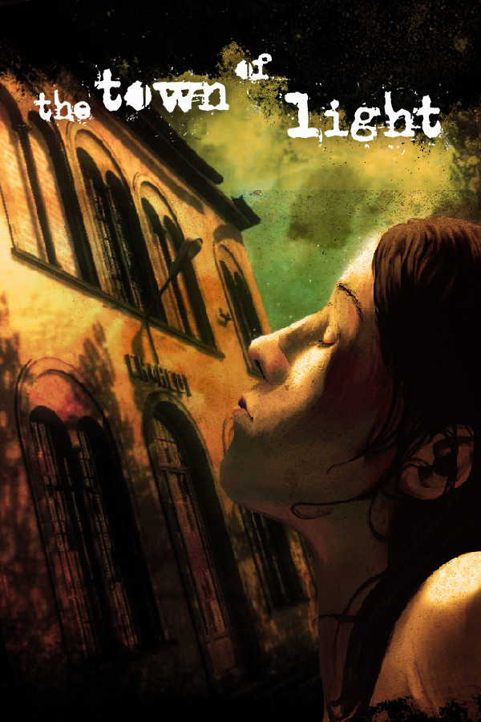

دوبلي › الألعاب المعرّبة › The Town of Light
تعريب The Town of Light للعربية

رعب نفسي واقعي سنة 1938: رينيه، 16 سنة، تُنتزع من عالمها وتُرسل إلى مستشفى للأمراض العقلية في إيطاليا. ترجع بعد سنين تبحث عن ذكرياتها.
تعريب كاملمن ملف التعريب اللي جهّزه صاحب البرنامجويندوز · Steamمجاني
تحميل دوبلي 0.4.2 وتعريب اللعبة
بصمة الملف (SHA-256): 510e791ab0f41e4832291ec22805fe3d8cd2c7ec0b099be6fa31c29b77c90f3d
طريقة تعريب The Town of Light
- حمّل دوبلي من الزر فوق وشغّل ملف التنصيب DubliSetup.exe.
- افتح دوبلي من الاختصار اللي على سطح المكتب، وادخل المكتبة الرسمية.
- اختر لعبة The Town of Light واضغط تركيب الترجمة — دوبلي يلقى اللعبة في Steam ويركّب التعريب.
- شغّل اللعبة، والنصوص تطلع بالعربي. تقدر تشيل التعريب بنفس الطريقة وترجع اللعبة لأصلها.